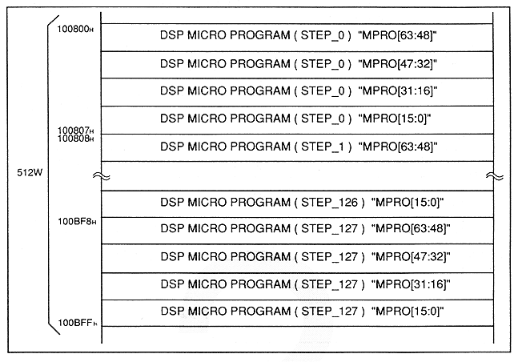

Return to previous page
｜
Return to menu
｜
Go to next page
Figure 4.6 DSP microprogram map

Table 4.7 DSP microprogram
Name
Contents
MPRO
Microprogram register
Return to previous page
｜
Return to menu
｜
Go to next page